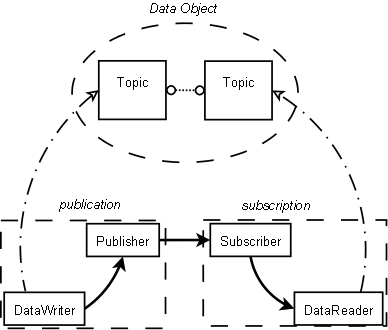
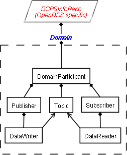

<div id="contenttext">
  <div class="bodytext" align="justify">
    <span class="headertext">Overview of DDS - DCPS</span>

    <p>Section 7.1.1.2 in the OMG's 1.2 DDS specification
      <a href="http://www.omg.org/cgi-bin/doc?formal/07-01-01">(formal/07-01-01)</a> contains a more
      detailed overview of DDS.</p>

    <h1>A Simple Conceptual View</h1>
    
    <br />

    <h2>Publish and Subscribe</h2>
    <p>DDS is a publish and subscribe service.  Data values (Samples) are transferred through the
      system for conceptual "Data Objects".  The "publication" (the association of a
      Publisher and a DataWriter) send Samples to one or more "subscription" (the association of a DataReader
      and a Subscriber).

    </p>

    <h2>Basic Components of the System </h2>
    <p>The basic components are Topic, Publisher, Subscriber, DataWriter, and DataReader.
      <ul>
        <li>Topics are information about a single data type and the distribution and availability of samples. </li>
        <li>Publishers apply control and restrictions to flow of data from DataWriters.</li>
        <li>Subscribers apply control and restrictions to flow of data from DataReaders.</li>
        <li>DataWriters create Samples of a single application data type.</li>
        <li>DataReaders receive Samples of a single application data type.</li>
        <li>A Publisher can have many DataWriters.</li>
        <li>A Subscriber can have many DataReaders.</li>
        <li>A DataWriter has a single Topic.</li>
        <li>A DataReader has a single Topic.</li>
        <li>A Topic can have many DataReaders and DataWriters.</li>
        <li>A "publication" can have many associated "subscriptions".</li>
        <li>A "subscription" can have many associated "publications".</li>
      </ul>
    </p>

    <h2>Data Flow</h2>

    <p>The application on the publishing side initiates the flow of data by writing a data value to
      the DataWriter.  The DataWriter's publication publishes the Samples.  The publication sends
      the Samples to the associated subscription(s).  Each associated Subscriber gives the recieved Sample
      to its DataReader(s) that are associated with the sending DataWriter.  The flow ends when the
      application on the subscribing side retrieves the data from the DataReader.</p>

    <p>Quality of Service (QoS) Policies control the flow of the data through the system.  The Topic,
      DataReader, DataWriter, Publisher, and Subscriber all have QoS polices.  The QoS policies of
      Publisher, DataWriter, and Topic control the data on the sending side.  QoS policies of
      Subscriber, DataReader, and Topic control the data on the receiving side.</p>

    <h2>Associating a publication and subscription</h2>
    <p>The "Data Objects" are identified by Topics.  Topics are compatible when they have the same name,
      the same data type and the QoS polices are not in conflict.  When a DataReader's Topic is compatible
      with a DataWriter's Topic, then the "publication" and "subscription" become associated and data is
      published between them.</p>

    <h2>Actual Components in the System</h2>
    
    <h3>DDS Specification Components</h3>
    <p>The <b>Domain</b> is the conceptual container of the system.  There is no real Domain object.
      Components in a domain can only communicate with components in the same domain.
    </p>
    <p>
      The system components are called "Entities" because they all inherit from the <b>Entity</b> class.
      Each Entity has specialized QoS policies.  An Entity may have a Listener, a callback interface for
      notifications about changes in the Entity's state.   The Entity should potentially have a
      StatusCondition, a wait interface (using WaitSets) for detecting changes in the Entity's state.<br />
    </p>
    <p>System Entites:
      <ul>
        <li><b>DomainParticipant</b>: Membership of the domain. All other entity types are attached to it.</li>
        <li><b>Topic</b>: Data Object that values will be published/received for</li>
        <li><b>Publisher</b>: Manager of the DataWriters</li>
        <li><b>Subscriber</b>: Manager of the DataReaders</li>
        <li><b>DataWriter</b>: Publishes data for a Topic</li>
        <li><b>DataReader</b>: Receives data published for a Topic</li>
      </ul>
    </p>


    <h3>OpenDDS Implementation Specific Components</h3>
    <p>The <b>DCPSInfoRepo</b> is the OpenDDS object that maintains the state of the Domain(s).  The
      DCPSInfoRepo detects when subscriptions and publications in a domain should be associated and
      notifies them to make the associations.</p>

    <h2></h2>
    <p></p>


  </div>
</div>

